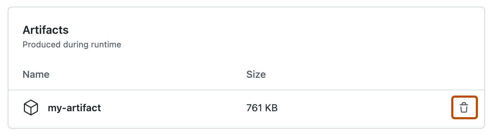

You can reclaim used GitHub Actions storage by deleting artifacts before they expire on GitHub.
Deleting an artifact
Warning
Once you delete an artifact, it cannot be restored.
Write access to the repository is required to perform these steps.
By default, GitHub stores build logs and artifacts for 90 days, and this retention period can be customized. For more information, see Billing and usage.
On GitHub, navigate to the main page of the repository.
Under your repository name, click Actions.
In the left sidebar, click the workflow you want to see.
From the list of workflow runs, click the name of the run to see the workflow run summary.
Under Artifacts, click next to the artifact you want to remove.

Setting the retention period for an artifact
Retention periods for artifacts and logs can be configured at the repository, organization, and enterprise level. For more information, see Billing and usage.
You can also define a custom retention period for individual artifacts using the actions/upload-artifact action in a workflow. For more information, see Store and share data with workflow artifacts.
Finding the expiration date of an artifact
You can use the API to confirm the date that an artifact is scheduled to be deleted. For more information, see the expires_at value returned by the REST API. For more information, see REST API endpoints for GitHub Actions artifacts.
Artifacts from deleted workflow runs
When a workflow run is deleted all artifacts associated with the run are also deleted from storage. You can delete a workflow run using the GitHub Actions UI, the REST API, or using the GitHub CLI, see: Deleting a workflow run, Delete a workflow run, or gh run delete.